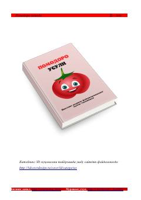

PMVaqtni samarali boshqarish va ish unumdorligini oshirish uchun Pomodoro texnikasi bo'yicha qo'llanma.
Ushbu kitob vaqtni samarali boshqarishning mashhur Pomodoro texnikasini tushuntiradi. Muallif Francesco Cirillo tomonidan ishlab chiqilgan ushbu usul vazifalarni kichik vaqt oralig'iga bo'lish orqali diqqatni jamlash va ish unumdorligini oshirishga yordam beradi.